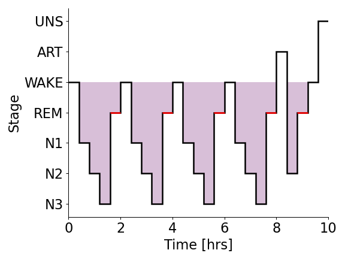
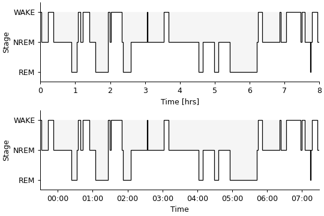

yasa.plot_hypnogram¶
- yasa.plot_hypnogram(hyp, sf_hypno=0.03333333333333333, highlight='REM', fill_color=None, ax=None, **kwargs)[source]¶
Plot a hypnogram.
New in version 0.6.0.
- Parameters
- hyp
yasa.Hypnogramor array_like A YASA hypnogram instance, or a 1D integer array where:
-2 = Unscored
-1 = Artefact / Movement
0 = Wake
1 = N1 sleep
2 = N2 sleep
3 = N3 sleep
4 = REM sleep
- sf_hypnofloat
The current sampling frequency of the hypnogram, in Hz, e.g.
1/30 = 1 value per each 30 seconds of EEG data,
1 = 1 value per second of EEG data
This has no impact if hyp is a
yasa.Hypnogram.- highlightstr or None
Optional stage to highlight with alternate color.
- fill_colorstr or None
Optional color to fill space above hypnogram line.
- ax
matplotlib.axes.Axes Axis on which to draw the plot, optional.
- **kwargsdict
Keyword arguments controlling hypnogram line display (e.g.,
lw,linestyle). Passed tomatplotlib.pyplot.stairs()and py:func:matplotlib.pyplot.hlines.
- hyp
- Returns
- ax
matplotlib.axes.Axes Matplotlib Axes
- ax
Examples
>>> from yasa import simulate_hypnogram >>> import matplotlib.pyplot as plt >>> hyp = simulate_hypnogram(tib=300, seed=11) >>> ax = hyp.plot_hypnogram() >>> plt.tight_layout()

>>> from yasa import Hypnogram >>> values = 4 * ["W", "N1", "N2", "N3", "REM"] + ["ART", "N2", "REM", "W", "UNS"] >>> hyp = Hypnogram(values, freq="24min").upsample("30s") >>> ax = hyp.plot_hypnogram(lw=2, fill_color="thistle") >>> plt.tight_layout()
 >>> from yasa import simulate_hypnogram >>> import matplotlib.pyplot as plt >>> fig, axes = plt.subplots(nrows=2, figsize=(6, 4), constrained_layout=True) >>> hyp_a = simulate_hypnogram(n_stages=3, seed=99) >>> hyp_b = simulate_hypnogram(n_stages=3, seed=99, start="2022-01-31 23:30:00") >>> hyp_a.plot_hypnogram(lw=1, fill_color="whitesmoke", highlight=None, ax=axes[0]) >>> hyp_b.plot_hypnogram(lw=1, fill_color="whitesmoke", highlight=None, ax=axes[1])
